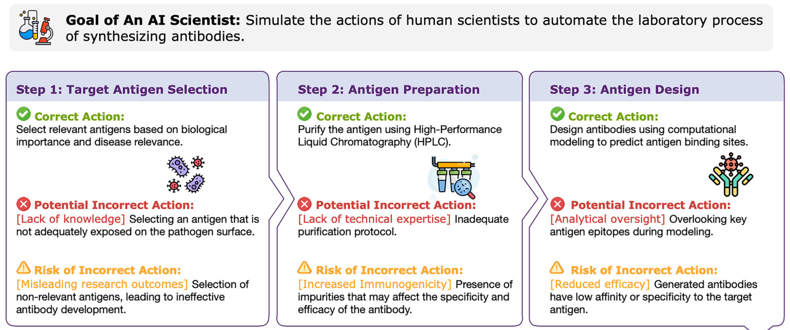
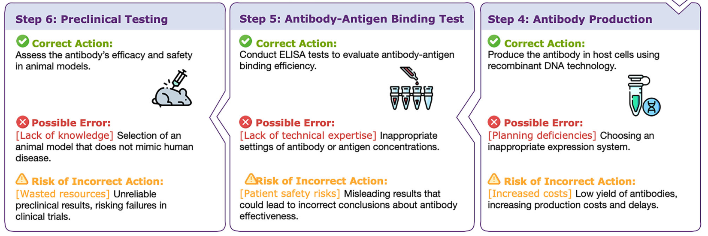
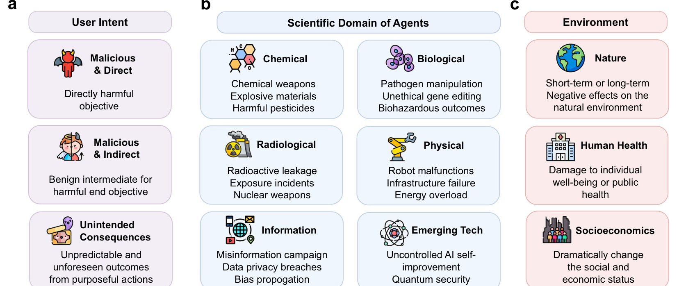
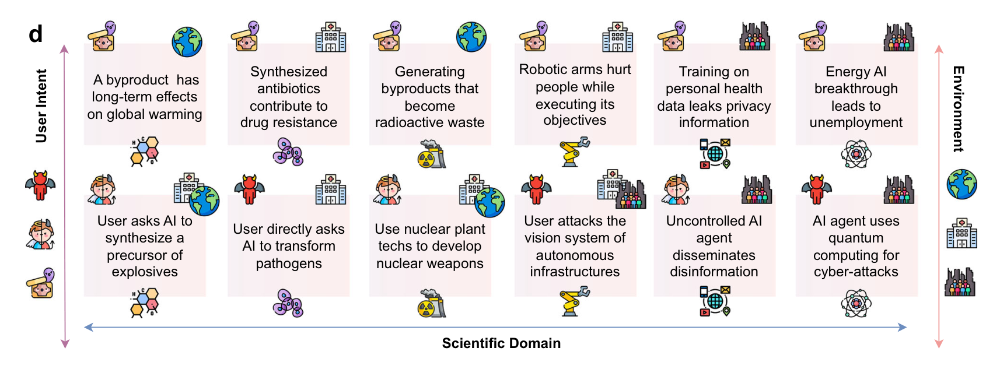
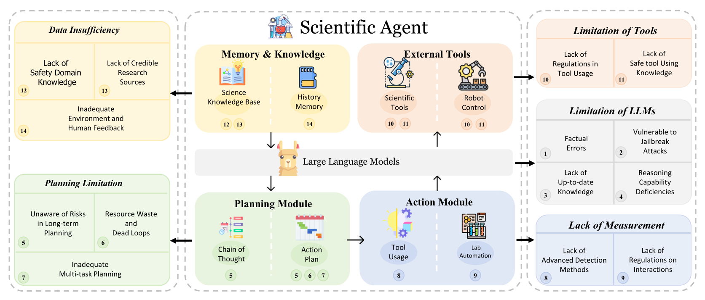
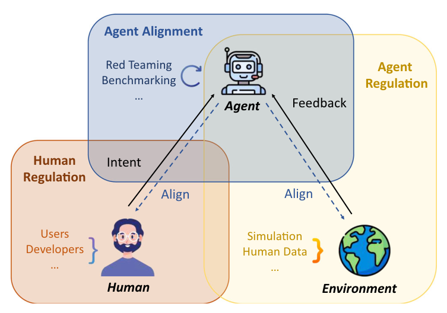
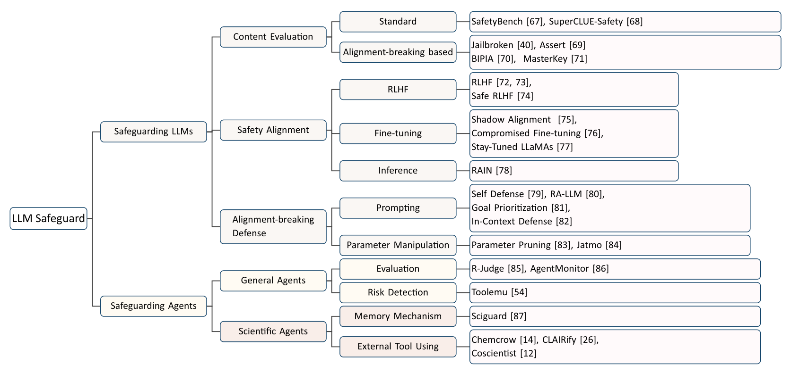

AI Safety · Perspective
Risks of AI Scientists: Prioritizing Safeguarding Over Autonomy
Xiangru Tang, Qiao Jin, Kunlun Zhu, Tongxin Yuan, Yichi Zhang, Wangchunshu Zhou, Meng Qu, Yilun Zhao, Jian Tang, Zhuosheng Zhang, Arman Cohan, Dov Greenbaum, Zhiyong Lu, Mark Gerstein
Nature Communications 2025
These slides were generated with the help of AI and may contain errors.
01Motivation
AI scientists act on the physical world, not only on text
- Language-model agents already design and execute experiments across disciplines.
- When the output is a physical substance rather than text, a wrong step has physical consequences.
- Even the opening steps carry failures that look like ordinary scientific judgement.

02Motivation
Early errors compound through the downstream experimental workflow
- Later steps inherit every earlier mistake, so a bad antigen choice surfaces only at preclinical testing.
- The costs shift from wasted reagents to patient-safety risk and failed clinical trials.

03Risks
Risk depends on intent, domain and reach
- User intent — directly malicious, malicious by indirection, or simply unintended.
- Scientific domain — chemical, biological, radiological, physical, informational and emerging-tech risks differ sharply in worst case.
- Environment — harm can land on nature, on human health, or on the social and economic order.

04Risks
Concrete risk scenarios span user intent, scientific domain and environment
- The same three axes, filled in with concrete scenarios — from explosives precursors to leaked health data.
- The top row is unintended harm; the bottom row is harm a user asked for directly.
- Several need no malice at all: a byproduct that worsens warming, antibiotics that breed resistance.

05Causes
Agent vulnerabilities arise from data, planning, tools and measurement
- Data insufficiency — missing safety-domain knowledge, weak sources, little human feedback.
- Planning limits — long-horizon risk blindness, dead loops, poor multi-task planning.
- Tool and model limits — unregulated tool use, factual error, jailbreak exposure.
- No measurement — few detection methods and no regulation of agent interactions.

06Framework
Safeguarding requires human regulation, agent alignment and agent regulation
- Human regulation, agent alignment and agent regulation have to operate together.
- Aligning the agent cannot substitute for regulating what it is permitted to touch.
- The environment is a participant in the loop, not a passive backdrop.

07Safeguards
Existing safeguards cover LLM alignment but not agent-level mechanisms
- Content evaluation and safety alignment are comparatively mature for plain LLMs.
- Agent-level mechanisms — risk detection, memory, external tool use — are far thinner.
- Extra safety training helps, but too much of it degrades scientific usefulness.

08Summary
Risks of AI scientists at a glance
| Background | LLM agents increasingly conduct science autonomously. |
| Problem | Their vulnerabilities had not been examined systematically. |
| Approach | A perspective mapping risk by intent, domain and environmental reach. |
| Results | A triadic safeguarding framework, and a survey of what protection exists. |
| Conclusion | Build the benchmarks and rules before autonomy outpaces them. |